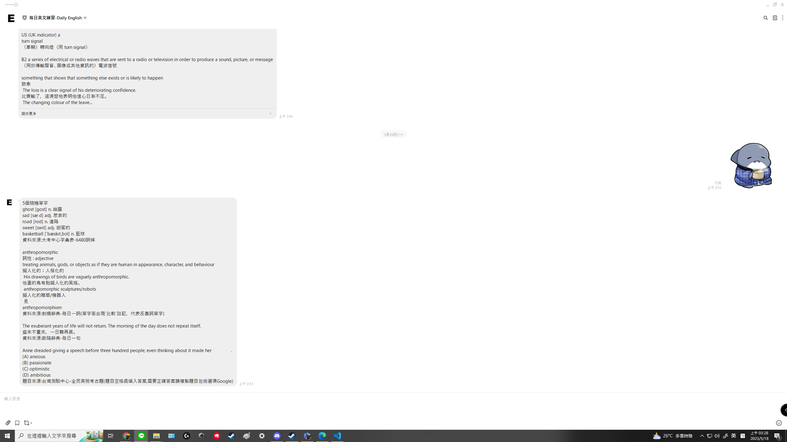
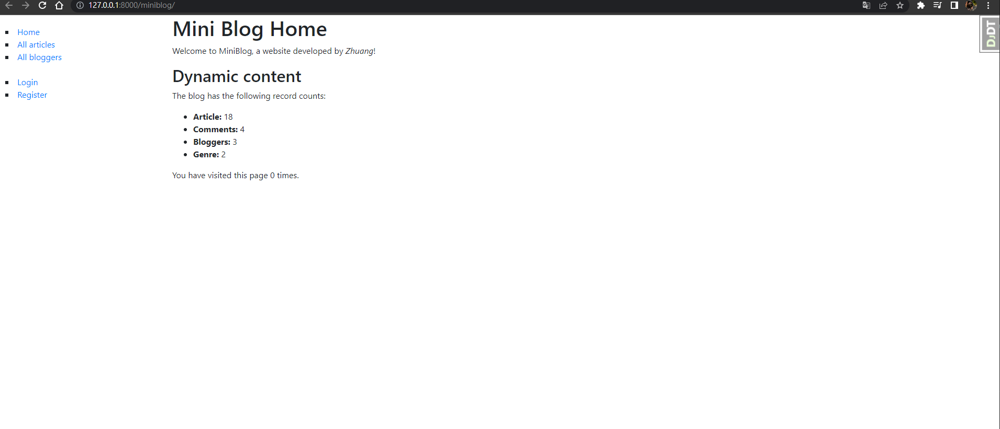

你好，我叫莊長霖，台南人目前在新北從事兒童職能治療師，本身個性較溫和內向，從小個性也比較宅喜歡在家打電腦，目前已在職即將四年， 關於想轉換跑道這件事主要原因為台灣在治療師的環境待遇，另外一點是雖然對自己的工作還算有熱情也喜歡兒童，但畢竟不是自己所選， 在當時國中時不清楚自己將要往什麼方向前進所選的職業，這次思考過許久也嘗試寫出程式取得成就感後決定想往自己感興趣的軟體行業， 也想試著做出能讓大眾使用到的程式。
剛想成為軟體工程師是在2022年的10月，因為當時想轉行思考了很多最後在朋友的影響下接觸澎澎的影片開始自學python，總共花了3~4個月打好基礎，嘗試完 成leetcode和codewars上的題目約50題，後續自行嘗試完成了一個可傳訊後提供每日英文的linebot機器人並部屬，最後在找工作前除了學習一些軟體知識 像是http協定等，還有為了更了解django，自己透過網路教的圖書館網頁自行跟著寫了一個簡易的部落格，包含登陸、註冊、發文留言等。 我在製作這兩個軟體時總共有遇到部屬失敗、部屬selenium會遇到很多問題像是搜尋不到chromedriver等最後要改用requests重寫、 以及部落格如何維持登入狀態做每一件事導回哪個網站等這些，其中還有很多功能是教學裡沒有這些都需要我先透過終端機或網路協定等找到錯誤，並自行 搜尋google和stackoverflow等尋找答案嘗試解決。如果要用實際的描述當時晚上9點下班開始學寫程式的知識每天都會持續到睡前凌晨4~5點。
English Line Bot(點擊連結到github) - 接觸程式後第一個嘗試使用python和django寫出來的軟體，由於平常很常使用到LINE所 以最先想設計的程式是透過LINE來快速取得資訊，從中學習到了一些Web Crawler以及部屬GCP的使用方法，過程遇到的困難主要在該使用request或selenium的情 況以及部屬上GCP並能正常運作。
Mini Blog(點擊連結到github) - 簡單的部落格，因為第一個完成的程式雖然使用到django網路框架，但並沒有深入，決定使用 django自己寫一個簡單的網站試試看，瞭解生活常用到的網頁如何完成，從小就接觸網站也看過許多社交媒體網站，所以決定使用部落格的格式完成，過程遇到的困 難主要是基本頁面完成以後的各種功能，像是註冊後給與權限，保持登入狀態以及重導回正確網頁，與前一個軟體一樣遇到困難主要先透過終端機瞭解狀況，之後透 過google各種教學，或到Stack Overflow找答案，最後會尋求周遭人詢問。
雖然目前尚有工作，之後也有升學考慮，但過往經驗我認為也決定自己可以在下班下課時繼續完成計畫，為了轉換跑道的熱情，除了晚餐和盥洗時間， 其餘都是我可以用來學習寫程式和完成作品的時間直到睡覺，週六假日在完成預定計畫前也不會鬆懈。
目前並沒有想加入的公司，主要是以軟體程式後端為主的工作都會想去試試看，一開始並沒有經驗只能讓自己先多學習，如果要選擇的話目前主流的AI相關職缺可能 會更吸引我。
因為跟自己的職業有關，生活上比較常遇到的負面情緒是在教育小朋友時遇到的各種事情，對我來說就是種日常，所以適應是我覺得能應對的方式， 但下班後或放假時我能打打遊戲，出門走走喝點酒或與朋友交談這都是處理情緒的方式，而且我認為只要有換個環境不要一直在職場上都能處理掉。
因為之前主學得是後端python，雖然也有看過網路的css、html、javascripe的基礎內容，但整體在做前端時還是偏向入門新手需要仰賴網路上的知識， 我需要先去找一個基礎的網頁模板不用太複雜，並修改成適合放自我介紹及QA的網頁。
加入訓練是為了自己的轉行路，但光說會努力是不夠的，會用第一階段行動來表示自己的決心。